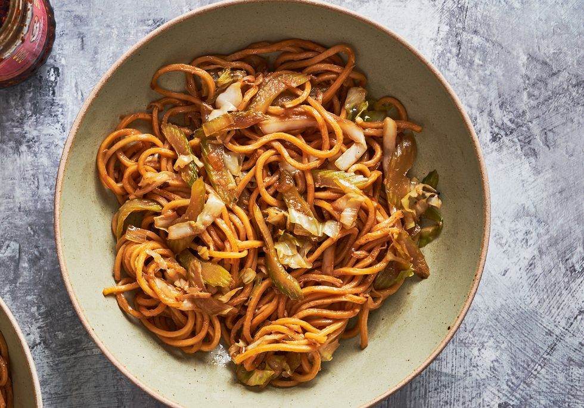

Chicken Chow Mein Recipe
The exact origins of chow mein are not entirely clear, but historians suspect this dish was born in northern China millennia ago. Thousands of years later, it’s now been popularized by a beloved chain with a cute panda mascot.

Ingredients
- 3 (5.6-oz.) packages fresh yakisoba noodles or 1 lb. dried wheat noodles
- 1/2 c. reduced-sodium soy sauce
- 1/2 c. sesame oil
- 1 tbsp. rice vinegar
- 1/4 tsp. white or black pepper
- 1 tbsp. granulated sugar
- 1 tbsp. oyster sauce
- 1 tbsp. vegetable or canola oil
- 1/2 small head green cabbage, thinly sliced (about 4 c.)
- 4 large celery stalks, sliced on an angle (about 2 c.)
- 1/2 medium white onion, diced (about 1 c.)
- 3 cloves garlic, minced or grated
- 1 tbsp. minced or grated fresh ginger
Steps
- Fill a wok or large, high-sided skillet with water and bring to a boil. Once boiling, add noodles and cook just until loosened, about 2 minutes. Drain and set aside.
- In a small bowl, whisk soy sauce, sesame oil, rice vinegar, pepper, sugar, and oyster sauce.
- Heat wok over high (make sure it’s completely dry) and add oil. Once oil begins smoking, add cabbage, celery, and onions. Stir-fry, mixing frequently, until slightly softened and wilted, about 3 minutes. Add garlic and ginger and cook until just fragrant, about 1 minute.
- Add noodles and, using tongs, toss until completely combined.
- Give sauce a quick whisk and add to wok. Toss until combined and noodles are completely coated in sauce, being careful not to break noodles into small pieces.